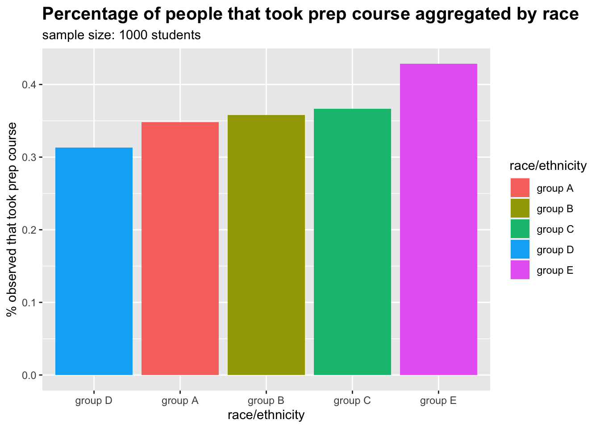

I explore different social and academic variables of 1000 students and then use these variables in a classification problem to predict whether or not a student has had a test preperation course. I use a basic random forest algorithm from the caret package to make my predictions.
#load libraries
#
library(dplyr)
library(ggplot2)
library(tidyr)
library(gridExtra)
library(caret)#load data
#
data <- read.csv("StudentsPerformance.csv")
glimpse(data)## Rows: 1,000
## Columns: 8
## $ gender <chr> "female", "female", "female", "male", "ma…
## $ race.ethnicity <chr> "group B", "group C", "group B", "group A…
## $ parental.level.of.education <chr> "bachelor's degree", "some college", "mas…
## $ lunch <chr> "standard", "standard", "standard", "free…
## $ test.preparation.course <chr> "none", "completed", "none", "none", "non…
## $ math.score <int> 72, 69, 90, 47, 76, 71, 88, 40, 64, 38, 5…
## $ reading.score <int> 72, 90, 95, 57, 78, 83, 95, 43, 64, 60, 5…
## $ writing.score <int> 74, 88, 93, 44, 75, 78, 92, 39, 67, 50, 5…The lunch variable refers to whether or not a student was entitled to a free lunch so I will make the variable name more explicit. All variables apart from test scores are to be converted to factor variables. I will also turn binary variables to either 1 or 0.
data$test.preparation.course <- ifelse(data$test.preparation.course == "completed", 1, 0)
colnames(data)[4] <- "free.lunch"
data$free.lunch <- ifelse(data$free.lunch == "free/reduced", 1, 0)
data[, -c(6, 7, 8)] <- lapply(data[, -c(6, 7, 8)], as.factor)I will look at average test scores disparities between genders and then between genders in different racial groups.
#scores by gender
#
filtered <- data%>%group_by(gender, race.ethnicity)%>%summarise(math = mean(math.score),
reading = mean(reading.score),
writing = mean(writing.score))%>%ungroup()%>%
gather(key = subject, value = ave.score, 3:5)
byGender <- filtered%>%
ggplot(aes(x = subject, y = ave.score, fill = gender)) +
geom_bar(stat = "identity", position = "dodge") +
labs(title = "Average test score aggregated by gender", y = "Score", subtitle = "sample size: 1000 students") +
theme(plot.title = element_text(size = 15, face = "bold"))
byGender#scores by gender and race
#
byGender + facet_wrap(~race.ethnicity) + ggtitle("Average test score aggregated by gender and race/ethnicity")There are no alarming disparities between genders however females perform better in reading and writing while males perform better in maths and this holds true aggregated across every racial group. It is hard to detect any great disparity between racial group so I will explore this further.
#scores by race
#
filtered <- data%>%group_by(race.ethnicity)%>%summarise(math = mean(math.score),
reading = mean(reading.score),
writing = mean(writing.score))%>%
gather(key = "subject", value = score, 2:4)%>%ungroup()
filtered%>%ggplot(aes(x = race.ethnicity, y = score, fill = race.ethnicity)) +
geom_bar(stat = "identity") + facet_wrap(~subject) +
labs(title = "Average test scores aggregated by race/ethnicity", subtitle = "sample size: 1000 students", fill = "Race/Ethnicity", x = "") +
theme(plot.title = element_text(size = 15, face = "bold"), axis.text.x = element_text(angle = 45))#prep course by raceRanking by test score has remained constant through all subjects between racial groups with group E performing best across all subjects and group A performing worst. I will now explore test prepatory courses by racial group to see if that aligns with these finding.
#prep course by race
#
data%>%ggplot(aes(x = race.ethnicity, fill = as.factor(test.preparation.course))) +
geom_bar(stat = "count", position = "dodge") +
labs(x = "Race/Ethnicity", fill = "test prep course", title = "Students who have had te preperation aggregated by race/ethnicity", subtitle = "sample size: 1000 students") +
theme(plot.title = element_text(size = 12.5, face = "bold"))data%>%group_by(race.ethnicity)%>%
summarise(count = n(), notTaken = sum(as.integer(test.preparation.course) == 1), percent = 1-notTaken/count)%>%
ggplot(aes(x = reorder(race.ethnicity, percent), y = percent, fill = race.ethnicity)) + geom_bar(stat = "identity") +
labs(x = "race/ethnicity", y = "% observed that took prep course", fill = "race/ethnicity",
title = "Percentage of people that took prep course aggregated by race", subtitle = "sample size: 1000 students") +
theme(plot.title = element_text(size = 15, face = "bold"))
The order has not stayed the same as group D were the second highest performer over all subjects but had the least percentage of students taking preperation courses. Group E have had the greatest percentage of students taking prep course with over 40%.
As the ordering has not stayed the same I will look to see if the test prepaeratory course has any clear trend with grades
prepCourse <- function(var, title){
data%>%ggplot(aes(x = as.factor(test.preparation.course), y = var, fill = as.factor(test.preparation.course))) +
geom_boxplot() +
labs(x = 'took prep course', y = "score") + theme(legend.position = "none") +
ggtitle(title) + coord_flip() + theme(plot.title = element_text(face = "bold"))
}
prepMath <- prepCourse(data$math.score, title = "Math")
prepWriting <- prepCourse(data$writing.score, title = "writing")
prepReading <- prepCourse(data$reading.score, title = "reading")
gridExtra::grid.arrange(prepMath, prepReading, prepWriting)Here in every subject the median score of those who took a prep coorse was higher than those who did not. There are also a greater number of outliers on average in the non prep course group.
Next I will look if parental level of education has any trend with subject score.
#scores by parents education
#
filtered <- data%>%group_by(parental.level.of.education)%>%summarise(math = mean(math.score),
reading = mean(reading.score),
writing = mean(writing.score))%>%
gather(key = "subject", value = "score", 2:4)%>%ungroup()
filtered%>%ggplot(aes(x = subject, y = score, fill = reorder(parental.level.of.education, score, FUN = mean)))+
geom_bar(stat = "identity", position = "dodge") +
labs(title = "Average subject scores aggregated by parental level of education", fill = "parental level of education", y = 'average score') +
theme(plot.title = element_text(size = 15, face = "bold"))The results again keep their order through each subject with students with parents who had a higher level of education performing better.
Lastly I will look to see if there are any disparities in test scores between students who were entitled to a free school meal and those who were not.
#scores by free lunch
#
lunch <- function(var, title){
data%>%ggplot(aes(x = as.factor(free.lunch), y = var, fill = as.factor(free.lunch))) +
geom_boxplot() +
labs(x = "free lunch", y = "score") + theme(legend.position = "none") +
ggtitle(title) + coord_flip() + theme(plot.title = element_text(face = "bold"))
}
lunchMath <- lunch(data$math.score, title = "Math")
lunchWriting <- lunch(data$writing.score, title = "Writing")
lunchReading <- lunch(data$reading.score, title = "Reading")
gridExtra::grid.arrange(lunchMath, lunchWriting, lunchReading)The data shows that the median score in every subject for those who had a free lunch was lower than the students who did not.
I will use a simple random forest to make predictions on whether ot not a student had a test preperation course or not.
Firstly I will detect and remove any outliers in the data. I will do this by summing all of the subject scores together and omitting any students that fall 3 standard deviations away from average total score.
data <- data%>%mutate(totscore = math.score+reading.score+writing.score)%>%filter(!(totscore > mean(totscore) + 3*sd(totscore) | totscore < mean(totscore) - 3*sd(totscore)))
data[["totscore"]] <- NULLThere are now 994 observations left in the dataset. I will now split my dataset into a train set and a test set.
set.seed(0987)
split <- caret::createDataPartition(data$test.preparation.course, p = 0.8, list = F)
train <- data[split, ]
test <- data[-split, ]By using the trainControl function in the caret library I will specify for my model to divide the data into 5 folds and use repeated cross validation with 3 repeats so caret can tune the model to find the optimal parameters. The parameters that will be tuned will be the number of trees used (ntree) and the number of variables available to split at each tree node (mtry).
I will then use the train function in caret to specify the time of algorithm to use and to fit my model. By using the rf model in the caret package I do not have to worry about feature selection as caret has automated this for this specific algorithm.
#fit model
#
fitcontrol <- trainControl(method = "repeatedcv", number = 5, repeats = 3)
modelfit <- train(test.preparation.course ~ ., data = train, method = "rf", trControl = fitcontrol)The number of trees caret decided to use for the model were 500 which is the default and the parameter for mtry was 8. We can see the importance of each variable by looking at the mean decrease in the gini value
modelfit$finalModel$importance## MeanDecreaseGini
## gendermale 15.430803
## race.ethnicitygroup B 9.232447
## race.ethnicitygroup C 9.910355
## race.ethnicitygroup D 10.622578
## race.ethnicitygroup E 7.682045
## parental.level.of.educationbachelor's degree 7.962117
## parental.level.of.educationhigh school 8.865612
## parental.level.of.educationmaster's degree 5.847067
## parental.level.of.educationsome college 9.668747
## parental.level.of.educationsome high school 10.740078
## free.lunch1 12.262308
## math.score 82.299784
## reading.score 76.397635
## writing.score 98.518527Lastly I will make the predictions on my test set of data
confusionMatrix(predict(modelfit, newdata = test), test$test.preparation.course)## Confusion Matrix and Statistics
##
## Reference
## Prediction 0 1
## 0 102 35
## 1 25 36
##
## Accuracy : 0.697
## 95% CI : (0.6278, 0.7601)
## No Information Rate : 0.6414
## P-Value [Acc > NIR] : 0.05853
##
## Kappa : 0.3201
##
## Mcnemar's Test P-Value : 0.24528
##
## Sensitivity : 0.8031
## Specificity : 0.5070
## Pos Pred Value : 0.7445
## Neg Pred Value : 0.5902
## Prevalence : 0.6414
## Detection Rate : 0.5152
## Detection Prevalence : 0.6919
## Balanced Accuracy : 0.6551
##
## 'Positive' Class : 0
##